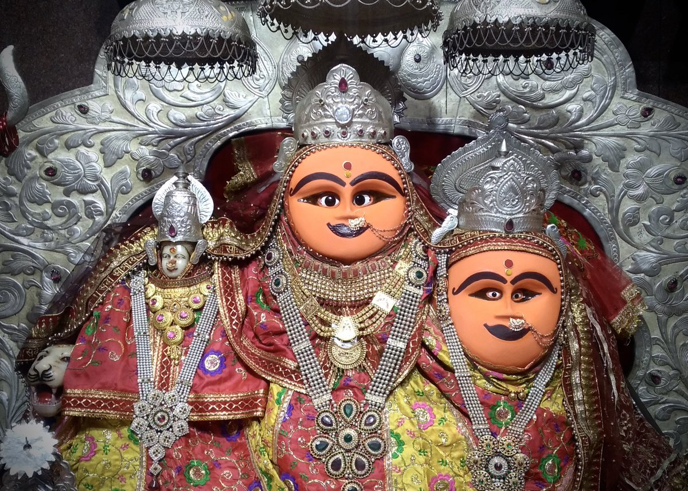
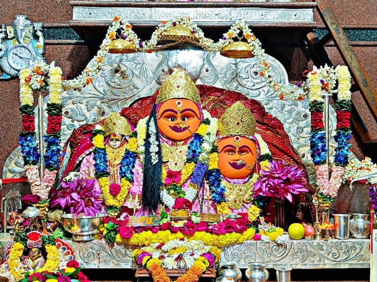
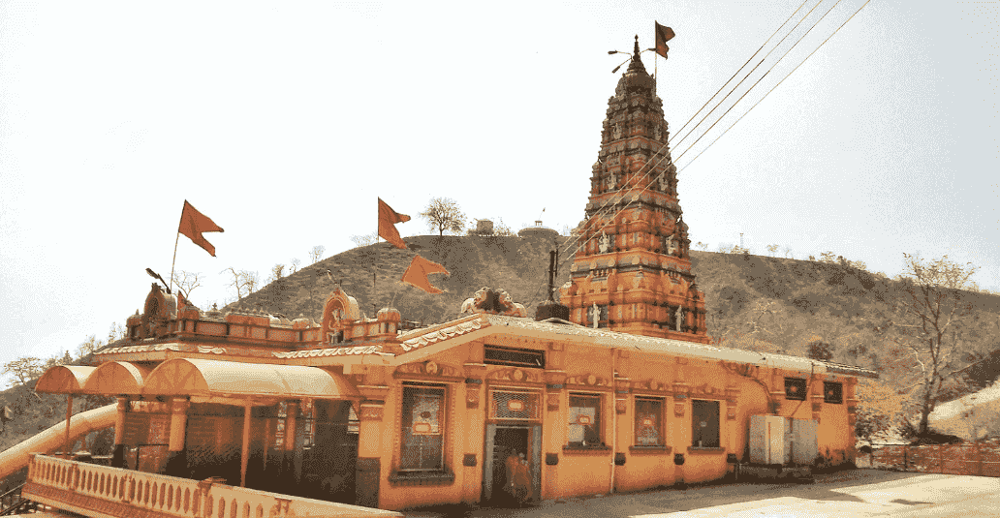

Bijasan Mata Mandir is a sacred temple dedicated to Goddess Bijasan. The temple attracts thousands of devotees every year who come to seek blessings and participate in religious rituals and festivals. Located in Madhya Pradesh, the temple holds great spiritual significance and is known for its peaceful atmosphere and divine presence.
The temple of Maa Bijasan has a rich historical and spiritual heritage. According to local traditions, the temple has been a center of devotion for centuries. Devotees believe that Goddess Bijasan fulfills the wishes of those who visit with true faith. Over time the temple has become a major pilgrimage destination where people gather during festivals and special religious occasions.
Devotees believe Maa Bijasan blesses devotees with prosperity and protection.
Major festivals like Navratri attract thousands of pilgrims.
The temple provides spiritual peace and devotion to visitors.

